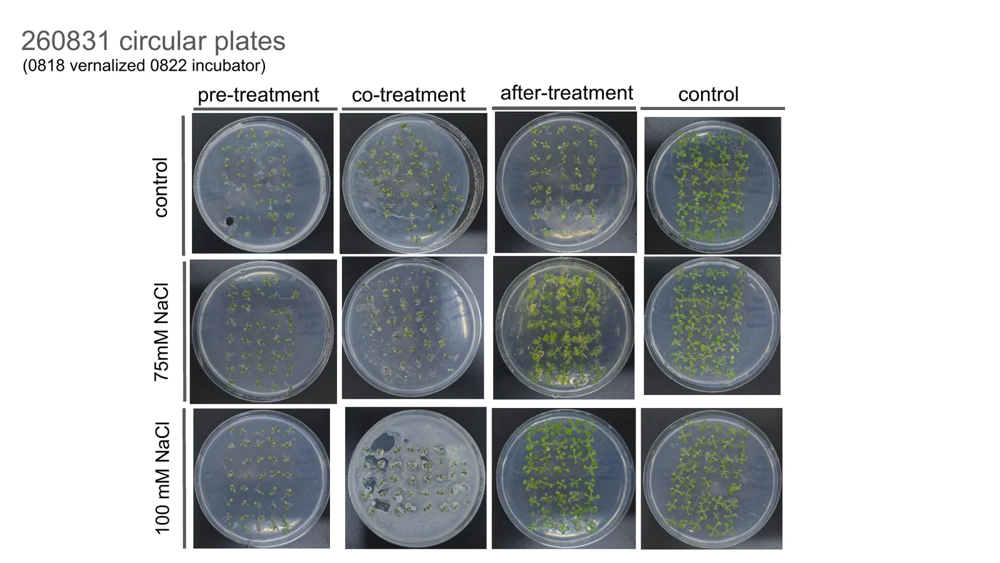
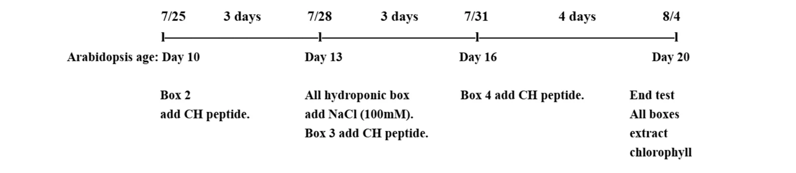
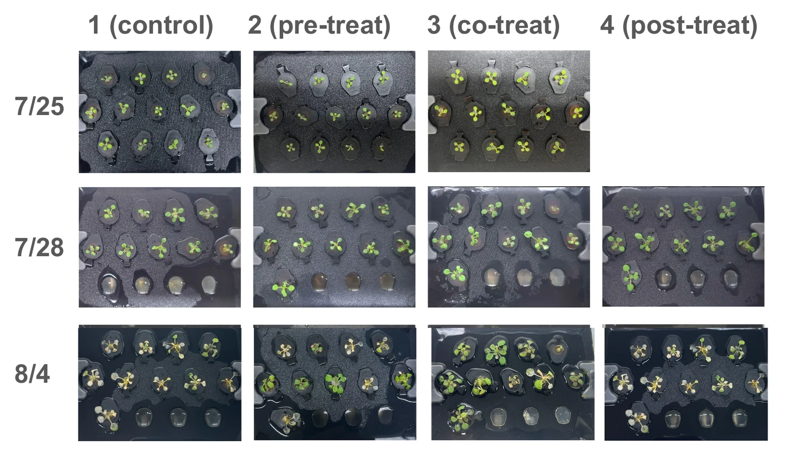

Two plates, five days apart in salt. This is the comparison the whole page is built on. Everything below is an attempt to make that difference a number instead of an impression.
Arabidopsis on plates, in water and in soil. How we set the salt and heat doses, how a protectant gets onto a plant, and what four candidates have done so far.
SectionWet Lab
Written byWet lab, plant sub-team
Last updated23 September 2026
StatusDraft, 13 fixes open
Contents
On this page
Overview and design
A protectant is only worth expressing if a stressed plant is measurably better off with it. Eight experimental sets since May have gone into building an assay that can tell that difference apart from noise.
The problem is narrower than it sounds. Salt at the wrong dose either does nothing or kills the seedling before a protectant has a chance to act, and either way the plates come out looking the same. Most of the work below is dose-finding and protocol repair, not screening, because until the assay separates a rescued plant from an unrescued one, the screen has nothing to report.
8Experimental sets, May to September
3Growth systems running in parallel
4Protectants queued for screening
3Readouts, from set 4 onward
One run, end to end
Every set on this page moves through the same six stages. The dates change and the treatment changes; the shape does not.
Stratify
Seeds go onto neutral ½ MS plates and sit at 4 °C in the dark. We began at two days on Dr. Kyle's advice to standardise it, then moved to four when germination in the salt sets was still ragged.
Prof. Cheng's feedback, written up on 2 September, added one detail we had been getting wrong: blow the seeds dry inside the safety cabinet after they come out of the cold, or the surface water carries them off the agar later.
The step we kept skipping is seed surface sterilisation. Dr. Kyle recommended chlorine-gas treatment in June for the bacterial contamination we kept seeing, and the recorded cause of losing the whole first CH Bio peptide trial is, in the minutes' own words, that the seeds were not sanitised. Anyone running this protocol should sterilise before sowing. We did not do it consistently and it cost us a trial.
Medium
½ MS, MES buffer, pH 5.7–5.8; sucrose 3% (sets 1–3), 1% (from set 4)
pH adjust
KOH only, never NaOH
Duration
2 days (to June), 4 days (from July)
Sterilisation
Chlorine gas, advised June, not applied consistently
7 June. Seeds onto plates and into the cold, with an instructor at each elbow. Two days of stratification then; four from July.
Grow on
Plates move to the growth chamber at 22 °C and 40–45% humidity. Early sets transferred seedlings at four days old, which is the age at which a root is long enough to lift with forceps and short enough to survive it.
That turned out to be too young. Prof. Cheng puts the useful window at ten to twenty days old, and caps the salt at 200 mM for a plant of that age. Dr. Kyle had named the same 200 mM ceiling in July, after 250 bleached a whole set; we came down further still, to 150. Her gate is developmental, not calendrical: wait until the first true leaves are out before starting, which is the staging logic the standard growth-stage scheme is built on [1]. Neither of the two set 8 decks records a run built that way: both put treatment four days after the plates entered the incubator, the same schedule as sets 1 to 7. See fix 6.
Chamber
22 °C, 40–45% RH
Age at transfer
4 days in every set we have a dated record for; the ten-day window is advice, not yet a run (fix 6)
Light
Supplementary tubes fitted in July after thin roots and pale leaves
16 June. The first vertical plates going into the chamber on their rack, standing at about ten degrees.
Transfer
Seedlings are lifted onto condition plates: square 13 × 13 cm plates stood upright for root work, round plates laid flat for rosette work. Square plates started at 9 to 10 seedlings per row, 18 to 20 per plate, and dropped to 8 per plate in July to leave room for roots that stay short. Round plates went from 25 seeds to 40 once we wanted enough tissue for a chlorophyll extraction.
Two details make a square plate measurable. Seedlings are screened for similar root length before they go on, so a group starts level; and every root tip is laid on a single straight line drawn on the back of the plate with a marker. Everything traced in ImageJ afterwards is growth from that line, which is why day 0 is the transfer and not the sowing.
Transfers are where contamination gets in. From July an instructor supervises every transfer, and plates come out of the sleeve by pushing through the plastic, with no hand inside it.
Square plate
50 mL, 1% agar, vertical rack at about 10°
Round plate
1% agar, horizontal (advice was 0.7–0.8%; see below)
Density
9–10 per row (sets 4–6), 8 per plate (from July), 40 per round plate
4 August. Moving seedlings one at a time. Whatever the destination, this is the step where contamination gets in.
Treat
Three arms per protectant: a day before the salt, the same day, and a day after. The point is not only whether a protectant works but when it has to arrive, because a bacterium in a bioreactor has to be told to start making it at some particular hour.
How the treatment is applied has been rebuilt three times. Pipetting liquid onto a plate floated the seedlings off the agar, and flooding the surface to get even coverage risks hyperhydricity, the glassy water-soaked tissue you get from leaving a plant submerged. Spraying reaches the leaves but leaves droplets on them. The current method transfers the plants onto a fresh plate that already contains the treatment, which is the only version where the dose is set by the medium instead of by what stayed on the plant.
One confound the pipetting protocol never removed. Protectant added a day early is still in the agar when the salt arrives, so the pre-treatment arm is really pre- plus co-treatment at a higher cumulative dose. We raised this in August and did not solve it until set 8 moved to transfers. Any pre-treatment result before that carries it.
Each compound arrived on the plant a different way, and the differences are large enough that a number from one phase should not be set beside a number from another.
Arms
Pre-, co-, after-treatment, plus untreated control
Phase 1, trehalose
Stirred into the molten agar before it set, so dose is a property of the plate. Sets 1 to 6.
Phase 2, CH Bio peptide
1:500. In the plate that is 100 µL of stock into 50 mL of agar; onto the surface it is 3 mL flooded on and 2 mL drawn back off, leaving 1 mL. Every other group got 1 mL of sterile water the same day, so the liquid itself is controlled for. The supplier did not give us a mass concentration, so we cannot state µg mL−1.
Phase 3, ACC deaminase
Passed through a 0.22 µm filter, then sprayed: three sprays from 10 cm, aimed top left, top right and bottom. On vertical plates the same nozzle delivers 1.67 mL in three sprays, aimed up, left and right, with nothing at the bottom because it runs down there anyway.
Application
Pipette (to Aug), spray (Aug), plate transfer (from Sept)
9 July. 富肽2號 on the bench the day it came back from CH Biotech. At 1:500 it became experiment set 7.
Observe
Six to seven days of daily photographs on a fixed rig. The first version, in May, was a phone in a light box over a round plate; a 3D-printed holder that takes a vertical plate at a repeatable position followed in July, with a black background, lights above and a camera on a stand. Before any of it, plates were held by hand and two photographs of the same plate could not be compared.
Bleaching, mould and root reorientation are all logged as they appear, with the date and the person on shift. A plate that goes mouldy is not quietly dropped; it is recorded and then excluded, because a fungus alters the medium and slows roots it never touches. The rule that goes with it is not to reopen the lid, because the spores then go everywhere. We broke that rule once, cutting a mouldy plate in half on 20 August to save the other side. It held for a day and the whole plate was gone by the 23rd.
1 June. The photo stand the dry lab built, in use. Two days of pictures are only comparable because of it.
Score
Three readouts, chosen because they fail differently. Root length is sensitive and cheap but only reads the part of the plant salt hits first. Fresh weight is blunt and hard to argue with. Chlorophyll is the one that maps onto what a farmer would notice.
Not every set carries all three. Sets 1 to 3 were scored by counting seedlings that were visibly growing, and have no chlorophyll data at all. Set 7 runs on round plates and has chlorophyll, fresh weight and leaf area but no root length. So the rule below that two readouts have to agree could only ever be applied from set 4 onwards.
Chlorophyll gets reported twice, normalised to fresh weight and not, because salt-stressed seedlings weigh so much less that dividing by their weight can make a dying plate look greener than a healthy one. In set 7 trial 3 the normalised figures put the salt-treated groups above their own unstressed control; without the normalisation the control is the highest value on the sheet.
Root length
ImageJ, outliers marked and kept in the raw sheet [6]
Fresh weight
Pooled seedlings (10 per tube in the protocol, 40 for a round plate), tared microcentrifuge tube. Whole seedling, not shoot only.
Chlorophyll
Beads, freeze at −80 °C, 80% acetone, vortex to white, centrifuge, read the supernatant [5]
Equation
(20.2 × A645 + 8.02 × A663) × V / (1000 × FW), in mg g−1
Extraction volume
V was 1 mL, 2 mL or 4 mL depending on the set, so values are not directly comparable between sets
28 June. Reading a plate against the light, before anything gets measured off it.
The first rig, 31 May. A phone in a light box over a round plate. Nothing about it is sophisticated. It exists because two photographs of the same plate taken by two people on two days were not comparable, and every measurement on this page depends on them being comparable. The 3D-printed holder for vertical plates came in July.
The runs so far
Eight numbered sets and one heat run. Three are closed with numbers we would defend; the rest produced protocol, or produced numbers and then lost the plates that carried them. Filter by what you are looking for.
Show
Set
Dates
Stress
Treatment
State
What came out of it
1
10–27 May
NaCl 50, 100 mM
Trehalose 1 mM
Closed
Whole-seedling length, not root length. 1 mM trehalose alone stunted unstressed seedlings to 14.6 mm against a 51.7 mm control; 50 mM salt alone gave 21.5 mm, and 50 mM with 1 mM trehalose 34.8 mm. A protectant with a toxic ceiling. The 100 mM rows in this deck are corrupt, so nothing is quoted from them.
2
20 May – 4 Jun
NaCl 100, 150 mM
Trehalose 0.5 mM
Closed
0.5 mM is harmless on its own and rescued nothing. Growing seedlings out of nine per plate at day 6: 9, 9 and 6 across 0, 100 and 150 mM, against 9, 8 and 5 with trehalose. By day 11 the untreated 150 mM plate had also fallen to 5 and the difference was gone. One plate per condition.
3
27 May – 12 Jun
NaCl 100 mM
Trehalose 0.125, 0.25, 0.5 mM
Inconclusive
Two trials run at the same time to double the sample, which then pointed different ways. In trial 1 the salt-only plate adapted and caught up. In trial 2 salt alone reached 8 of 9 while every trehalose plate came in lower, at 4, 6 and 5. Pooled or separate, neither supports a rescue. The germination counts also hold steady from day 8 to day 10 at 100 mM with and without trehalose, so salt at this level suppresses root elongation hard and leaves germination close to untouched. That is the observation that moved the readout off germination counts.
4
17 Jun – 2 Jul
NaCl 100 mM
Trehalose 0.25, 0.5, 1.0 mM
Partly void
First ImageJ measurements, first box plots, and the first set where two readouts disagreed. Nine seedlings measured per group on four consecutive days. At day 10, root length under 100 mM salt ran 35.7 mm alone against 39.6 with 0.25 mM trehalose, 33.9 with 0.5 and 43.0 with 1.0, which is the pattern the team read as a rescue. Every salt-plus-trehalose group still weighed less than salt alone, and the chlorophyll reading that went with it is a fresh-weight artefact (fix 4). Mould on several plates; Dr. Kyle's note that a contaminated plate contaminates its own data became a standing rule.
5
3–27 Jul
NaCl 150, 250 mM
Trehalose 1, 5, 10 mM
Two trials
250 mM bleached seedlings white by day three, before any protectant could show an effect, and the run was stopped at day six. This is where the salt ladder came down. The two trials also picked different best doses, 5 mM and then 10 mM, and that was never resolved. Per-seedling data exists for both trials, nine per group in trial 1 and eight in trial 2. The team's own later reading is that the plants were simply too young: four days of vernalisation and three days at 22 °C, and nothing that age survives 250 mM.
6
19 Jul – 3 Aug
NaCl 75, 100, 150 mM
Trehalose 5 mM
Closed
The clean dose ladder, and the only set with a spread attached. Mean root length at day 6 fell from 74.95 mm to 34.77, 11.00 and 1.36 mm across the four salt levels, nine seedlings per group. Trehalose moved every one of them by less than the standard deviation inside the group, and lowered it at 0 and 75 mM.
7
27 Jul – 5 Sep
NaCl 75, 100 mM
CH Bio peptide, three timings
4 trials
Trial 1 was declared contaminated and redone. Trial 2 has two days of photographs and no result. Trials 3 and 4 produced usable panels, and they rank pre- against co-treatment in opposite orders.
H
15–21 Aug
Heat, 37 °C
CH Bio peptide, three timings
Pretest
First heat run, and no treated arm beat the control. We held plates at 37 °C for five days instead of running either published protocol: the plate method is a 37 °C water bath with a two-hour recovery read out by Hsp100 [3], and the hydroponic one a 45 °C, 14-minute shock with four days of recovery [4]. Ours has no challenge and no recovery phase, so it is sustained moderate heat, not priming. Light in the chamber was also insufficient.
8
18 Aug – 5 Sep
NaCl 75, 100 mM
ACC deaminase, three timings
Void twice
The pretest, sown 18 August, was abandoned after three days of treatment when every plate that had received ACCD grew bacteria while the controls stayed clean. The Western blot run on 24 August then found no ACC deaminase in the B. subtilis at all, so there had been nothing to test. Trial 1, sown 21 August, grew bacteria again; the preparation had been filtered on the open bench instead of in the laminar flow hood. No usable number came out of either.
No runs match that filter yet.
Square glyph, vertical plate, root length. Round glyph, horizontal plate, rosette and leaf area. The plates went round, then square at set 4 so roots would grow down the surface and could be traced in ImageJ, then round again in August once the readout we cared about had moved above ground. Neither switch was cosmetic; both changed what could be measured.
Stress protocol setup
Two months of the plant work went into one question: what dose of salt hurts an Arabidopsis seedling without killing it first.
A protectant can only be seen in the gap between a stressed plant and a rescued one. Too little salt and there is no gap. Too much and the plant is dead before the protectant matters, which is the same result as a protectant that does not work.
The 1 to 10 mM trehalose range, and the 150 and 250 mM salt levels that went with it, came off a published dose study [2]. Experiment set 5 made this concrete. At 250 mM NaCl, seedlings began bleaching white on day three and almost every plant in the 250 mM plates had bleached by day five. The run was stopped at day six. Chlorophyll readings from those plates came out below the blank, which measures the absence of a plant.
No trehalose5 mM trehalose±1 standard deviation, n = 9
Read this figure carefully. The per-seedling workbook turned up in the 22 September data drop, and it records every root separately: nine per group, traced in ImageJ on 3 August, six days after transfer. So these are means with a spread, which is more than the page could say three weeks ago. What the whiskers do not buy is replication. Nine seedlings sitting on one plate share a pour of agar, a position in the rack and a day of light, so they are nine measurements of one plate and not nine runs of the experiment.
The ladder is the finding, and it is a good one: 74.95, 34.77, 11.00 and 1.36 mm with spreads that do not overlap. The trehalose comparison is still not a finding. At 100 mM the treated group sits 3.71 mm above the untreated one against a pooled standard error of about 2.3; at 75 mM it sits 5.59 mm below against a pooled standard error of about 3.3. Only the 150 mM pair comes close to separating, and that is a 1.17 mm gap on roots that have barely grown. Nothing here upgrades trehalose.
Fix 1 · two files, one experiment, three different averages
Until this week the numbers above came from Experiment Set 6 Root Length.docx. Three of its eight values disagree with the per-seedling workbook Arabidopsis Root Length Raw Data.xlsx, sheet experiment 6, and the other five match to three decimals.
150 mM NaCl: 1.753 against 1.364 mm. The nine seedlings read 0, 1.534, 2.014, 1.856, 1.424, 0.806, 3.544, 1.096 and 0. The docx figure is the mean of the seven that grew. Dropping the two that did not is a decision about what a dead seedling contributes to a mean, and neither file states the convention. This page now averages all nine, because a treatment that kills two plants in nine should not be rewarded for it. The old 1.8 mm is gone from the chart and the prose.
100 mM plus 5 mM trehalose: 13.602 against 14.713 mm. This one does not reconstruct at all. The nine seedlings sum to 132.421, and 13.602 is not that sum over nine, eight or seven; no single exclusion produces it.
5 mM trehalose control: 72.107 against 71.965 mm. Small, and unexplained for the same reason.
Whoever built the docx table has to say which cells went into each average, and the docx has to be corrected or withdrawn.
Fix 2 · the salt in the written protocol
Our own agar salinity protocol, Salinity stress on agar.pdf, section C, does not make the concentrations it labels. Step 5 splits a 600 mL batch into three flasks of 200 mL and labels them 0, 150 and 250 mM. Step 6 adds 2.192 g of NaCl to the 150 mM flask and step 7 adds 3.652 g to the 250 mM one. At 58.44 g mol−1, 2.192 g in 200 mL is 187.5 mM and 3.652 g in 200 mL is 312.5 mM. Both are exactly 1.25 times the label, which is what those masses give if they were weighed for 250 mL and the volume was later changed to 200.
Two readings are open and the file settles neither. Either the masses are right and step 5 should read 250 mL, in which case the labels are correct and nothing changes; or the volume is right and every plate made to this sheet carried a quarter more salt than its label.
How far it reaches is also open. This protocol describes the 0, 1, 5 and 10 mM trehalose against 0, 150 and 250 mM NaCl design, which is experiment set 5 only. The salt ladder in Figure 1 comes from set 6, at 0, 75, 100 and 150 mM, and no recipe for set 6 is written down anywhere in the archive: the agar formula column of the master run sheet is empty for all eight sets. Nothing in Figure 1 is restated here, and no concentration anywhere on this page has been rewritten, because the labels stay as the team recorded them until somebody settles which end of the protocol is wrong.
If it does turn out to cover set 5, it partly explains two things this page already reports: that 150 mM was harsher than expected and dried the seedlings out, and that 250 mM killed almost everything by day three. Whoever weighed that salt should check the bench notes for the flask volume.
Figure 1. The dose ladder, day 6. Experiment set 6, photographed 3 August, six days after transfer onto the condition plates. Top row untreated, bottom row 5 mM trehalose, salt increasing left to right. This panel is where the working range came from: 75 and 100 mM injure the plant and leave it alive, 150 mM does not. Day numbers on this page count from transfer, not from sowing; our own decks are not consistent about this and we have re-anchored them here.
What the ladder settles is the window everything else runs in. Below 50 mM the seedlings shrug it off. At 150 mM, roots stop at under 2 mm and there is nothing left to rescue. Screening runs at 75 and 100 mM. That number is ours, off this ladder. What the advisors set was the ceiling: Dr. Kyle in July and Prof. Cheng in September both put it at 200 mM, and 75 and 100 sit well inside it.
Figure 2. The same ladder on round plates, and a run we lost. A no-protectant repeat of the ladder started 18 August, to check whether bleaching scales smoothly with salt. The 100 mM plate was taken over by a fungal mat within six days. We photograph these and keep them in the record instead of reshooting quietly, because the contamination rate is itself a result about the assay.
Three timings, because timing is the deliverable
The screen does not only ask whether a protectant works. It asks when it has to be there, since the answer becomes an instruction to a bioreactor about when to switch on expression.
Day −1
Pre-treatment
Protectant a day before the salt. Tests whether the plant can be primed in advance of a forecast.
Day 0
Co-treatment
Protectant and salt together. The simplest case to run and the easiest to interpret.
Day +1
After-treatment
Protectant a day after the salt. Tests rescue after the damage has started, which is the realistic field case.
Getting the protectant onto the plant, three times over
This sounds like a detail. It cost the CH Bio peptide track two trials.
Pipetting the treatment onto a horizontal plate seemed obvious. Surface tension meant the liquid would not spread, and the seedlings that had not yet rooted into the agar floated off with it. Adding 3 mL to submerge the surface and drawing 2 mL back off gave even coverage, at two costs: a film of water left on plants that then went back in the incubator, and the risk of hyperhydricity, the glassy water-soaked growth that comes of leaving tissue submerged.
Spraying was next, at about 15 cm with a sterilised sprayer, and it reaches leaves properly. It also leaves droplets sitting on them, and Prof. Cheng's instruction, recorded on 2 September, was to dry the leaves before the plate goes back in the chamber, because standing water over the stomata is standing water over the plant's gas exchange. Her broader ruling was simpler: for salt and protectant, do not spray, transfer.
Set 8 does neither. Plants are moved onto fresh plates that already contain the salt, the protectant, or both, at each step in the timing series. It is more work, more plates and more transfers. It is also the only version in which the dose is a property of the plate, not of whatever happened to stay on the plant, and the only one that clears the pre-treatment carryover described above.
One correction is worth stating on its own, because it invalidated a whole set after the fact. Until August a plate was loaded with four-day-old seedlings: four days in the cold, four days of germination, then straight onto the condition plate on day 8. Prof. Cheng's instruction was to stretch the germination window from four days to ten and start from a plant with true leaves. Applied backwards, that is also the explanation for experiment set 5. Those seedlings had four days of vernalisation and three at 22 °C behind them when they met 250 mM NaCl, and at that age nothing was going to survive it, protectant or no protectant. Set 8 is the first run built to the wider window.
Loading a plate
Our own wiki write-up says twelve seedlings go onto each salinity plate, tips on the marker line. Neither the measurement files nor our own bench protocol agrees with it. Arabidopsis Root Length Raw Data.xlsx has nine seedling columns for sets 4, 5 trial 1 and 6, and eight for set 5 trial 2. The protocol PDF says eight in two places. The round-plate sets are a separate count again: the run sheet for set 7 records 40 seeds per plate. Twelve appears nowhere except in the prose.
Fix 3 · how many seedlings per plate
Plant_.docx, 22 September, phase 1: “place 12 seedlings per salinity plate”. The heat write-up says twelve as well. Against that, Salinity stress on agar.pdf section D says “draw 8 dots at the ends of the roots” and “choose 8 germinated seeds”, and the vernalization plates in section B carry 18 seeds in two rows of nine. Arabidopsis Root Length Raw Data.xlsx records nine measured per group for sets 4, 5 trial 1 and 6, and eight for set 5 trial 2.
Either twelve went on and only eight or nine were measurable, in which case the difference is a survival number nobody wrote down, or the wiki text is describing an intention that the bench never followed. Whoever loaded those plates should say which, and the wiki text should then match the protocol.
27 July. Every transfer since July happens under supervision in the cabinet. It is the single change that cut the contamination rate most.17 June. What we were up against before that. Both of these plates went into the record and neither went into the analysis.
Testing platforms
Three growth systems, kept in parallel on purpose. Each one answers a question the other two answer badly.
Running three systems at once is expensive for a team our size, and it is the reason there are eight sets and not fifteen. It buys one thing: a result seen in only one system is treated as a property of that system until another one repeats it.
Figure 3. All three systems, one chamber, 29 August. Plates and boxes above, soil below, on the same light and temperature. Sharing a chamber is not tidiness. It is the only way a difference between systems can be attributed to the system and not to the room.
Agar, the measuring system
Sterile, fully defined, and the only place where a root can be photographed and measured without digging it up. Every dose-finding number on this page came off an agar plate.
It runs in two orientations. Square plates stand upright at about 10° so roots grow down the surface and can be traced in ImageJ. Round plates lie flat, hold forty seedlings, and give enough rosette tissue for a chlorophyll extraction. From August the screening runs moved to round plates, because by then the readout that mattered had moved from root to shoot.
Its weakness is that agar is not soil. There is no microbiome, no drainage and no water potential gradient, and a plant on a plate never has to grow a root system that finds anything.
Two open faults, recorded here instead of tidied away. Dr. Kyle's advice in June was to pour horizontal plates at 0.7 to 0.8% agar because 1% is too thick; we kept 1%, seedlings failed to root into the surface in August, and the September decision was to stay at 1% across a treatment series so the plates in one comparison match. That is a consistency argument, not an answer to the original point.
The second is the roots that turned around. On day 3 of set 5, almost every root on the untreated 150 mM plate reversed and grew upward or sideways, and no other group did it. Our notes at the time guessed halotropism. That is probably the wrong word: halotropism is a root bending away from a salt gradient, and a plate salted uniformly has no gradient, so the likelier reading is that salt disrupted the gravitropic response itself. We logged it, never quantified it, and root length from that plate is not comparable with the rest.
Vessel
13 × 13 cm square, or 9 cm round
Medium
½ MS, MES, pH 5.7–5.8; sucrose 3% for sets 1–3, 1% from set 4
Agar
1% in both orientations, as run
Reads
Root length, fresh weight, chlorophyll. Leaf area is recorded but stays qualitative: at 40 plants on a 9 cm plate the rosettes overlap and the edges cannot be traced.
17 June, and the reason plates get labelled now. A rack loaded the wrong way round for a few days is enough to turn a root length experiment into nothing. These seedlings were moved into the hydroponic boxes instead.
Hydroponics: a known dose in water
Built to put a peptide into water and know exactly what concentration a root is sitting in. It is also the system closest to how a protectant would actually be delivered in the greenhouse trials our human practices work kept running into.
Five prototypes, and one change decided it. Boxes 1, 2, 3 and 5 were sown with seed and germinated 4, 3, 1 and 7 of 10; every one of them contaminated. Box 4 took four-day-old seedlings across from an agar plate instead, and 5 of 5 came through six days with no problem we could name. It is the design still running.
Three rules came out of it. Seedlings go in at four to seven days old, transferred across from agar, because every box that started from seed contaminated. Evaporated medium never gets topped up, because water leaves and salt does not, so refilling quietly raises the concentration you thought you were testing. And an addition from Prof. Cheng, recorded on 2 September: block the light at the bottom of the box, because roots want the dark.
In use
Prototype 4 (Box B); Box A, on prototype 1, kept and still contaminating
Volume
250–500 mL depending on box
Seedling age
4–7 days, transferred from agar
Status
Salinity set 1 and a heat set, both with three treatment timings, one box per arm. The protectant is CH Bio peptide, named on the run's own timeline sheet
The five boxes, as built
Prototype 1
The opaque tub
21.2 × 14.1 × 11.4 cm, 300–500 mL of medium, seeds sown straight into the box. Kept as Box A, and the first to teach us that a large open reservoir contaminates at the dried-medium line around the rim.
4 of 10 germinated over 11 days · contaminated
Prototype 2
The small box
7.5 × 7.5 × 5.3 cm and only 85 mL. Small enough to change medium often, small enough that the concentration moves as soon as anything evaporates. It also leaked.
3 of 10 germinated over 11 days · leaked, contaminated
Prototype 3
The tall box
6.5 × 6.5 × 10 cm, 70 mL. Tall for its footprint, and the worst of the five. Depth buys root room and costs surface area, and with ten seeds sown directly into it, nine never got going.
1 of 10 germinated over 11 days · contaminated
Prototype 4 · in use
The one change that worked
12.8 × 10.1 × 9.5 cm, 250 mL. Three things changed at once: filter paper to hold the seedling instead of a cap of agar, no lid, and medium only. And the plants stopped being seeds: four-day-old seedlings were moved across from an agar plate on 7 June instead of being sown into the box. Nothing failed in the six days we ran it.
5 of 5 seedlings established over 6 days · no problem found
Prototype 5
The same box, one step back
The same 12.8 × 10.1 × 9.5 cm box and the same 250 mL. One change: a hand-cut styrofoam float board in place of the filter paper, and seed sown into the medium again instead of seedlings moved in. Germination came back to 7 of 10 and so did the contamination.
7 of 10 germinated · contaminated, again
Read the counts carefully. Prototypes 1, 2, 3 and 5 were sown with seed and their numbers really are germination rates: 40%, 30%, 10% and 70%. Prototype 4 is the exception. Its 5 of 5 counts seedlings that arrived alive from an agar plate and stayed alive, which is a different thing. That single change, seed to seedling, is what separates the one box that worked from the four that did not, and prototype 5 is the check: same box, back to seed, contamination back with it.
Our own report to Prof. Cheng says six prototypes in three months, and the September write-up adds a seventh that is still a plan. Five are documented well enough to draw, and those are the five here. The sixth is the same box again with the hand-cut foam swapped for a 3D-printed board, because wet foam softens and tears in the middle of a medium change and printed plastic does not pick up the static that drags a root sideways during a transfer.
13 June. Box A and Box B on the rack. Box A contaminated at the dried-medium line around the top; Box B did not.23 July. Taking a failed box apart seedling by seedling. Prototypes 2 and 3 were dropped on the strength of afternoons like this one.
Soil, the system anyone believes
Peat, perlite and vermiculite, four trays, watered on a two-person shift roster. Soil is the worst system to measure in and the only one a farmer recognises, which is exactly why it is here. Our human practices work is with people who grow things in fields, and a rescued seedling on an agar plate does not answer them.
Salt behaves completely differently here. The first attempt built up 25 mM per day toward 100 mM, a gradual ramp proposed by Dr. Verslues. Prof. Cheng's assessment, recorded on 2 September, was blunt: for a month-old plant that dose is too mild, and worse, watering between doses washes the salt back out instead of letting it accumulate.
The revised schedule pours equal volumes of 100, then 200, then 300 mM, with no watering in between, and then keeps repeating 300 mM until the effect is visible. It has no fixed end date; the plants decide when it stops. A pot takes 30 to 50 mL before a little runs out of the bottom, which is how we know it reached the roots, and the tray under it wants to be 1 to 2 cm deep so it can hold 200 to 400 mL at a time.
Substrate
Peat, perlite, vermiculite
Trays
4, on a named daily roster
Ramp
100 → 200 → 300 → 300 → 300… until the effect shows, no water between
Reads
Rosette area, morphology, survival, seed set
22 August. Marking pots before the salt ramp starts. At this size an Arabidopsis is easy to lose track of in a tray of forty.
Bioreactor integration, and where it broke
The point of all three systems is to receive something the reactor makes. Purified or commercial protectant is the control; B. subtilis supernatant is the product.
The Western blot run on 24 August found no ACC deaminase in the B. subtilis preparation we had been spraying onto the soil trays for two days. The single band sits in the 18 August lane and the 23 August lane, the culture that went on the plants, is empty. Those two days do not count as a treatment, and the soil pre-treatment was rescheduled the same week.
It is the most useful negative result the plant work has produced. A protectant assay that cannot tell you the protectant was absent is not an assay, and the only reason we caught it is that the blot was run against the same batch that went on the plants.
The rule it implies was not in force when it was needed. The August plan said explicitly to run the first two ACCD trials without an activity assay or a blot of their own, and both of those trials are now gone: one to a preparation with nothing in it, one to bacteria on the plates. Blotting every batch before it touches a plant is the cheapest lesson in this project and it cost two experiments to learn.
Control arm
Commercial or purified protectant
Product arm
B. subtilis supernatant from the reactor
Gate
Blot the batch before it touches a plant: adopted in principle, not applied to either set 8 attempt
Status
Soil product arm unmeasured; agar set 8 abandoned twice
Four protectants are queued. One has been through four trials, one was attempted twice and failed twice, and two have not reached a plant. The table says which is which.
The assay is further along than the screen, and the gap has widened since September. Set 6 gave a defensible salt ladder, and the raw workbook has since put nine seedlings and a standard deviation behind it. Set 7 gave four trials of the CH Bio peptide that rank the treatment timings three different ways. Set 8, the ACC deaminase run, was abandoned twice in August and produced no number at all. Nothing on this page supports a claim that a particular protectant works at a particular dose, and a four-way comparison across three platforms is well beyond what this evidence can carry. What it can carry is a pipeline demonstrated end to end on two compounds, with the failures attached.
Working out what the next set has to test. Most of the decisions below were argued out standing over a desk like this one.
Performance comparison
Select a cell for what was actually run.
Protectant
Agar
Hydroponics
Soil
Trehalose reference compound
CH Bio peptide 富肽2號, commercial
ACC deaminase from our own B. subtilis
LEA14 expressed construct
BoPep4 designed peptide
Trehalose on agar
Sets 1–6 · 10 May to 3 August · six sets, two trials each in places
Trehalose was never a candidate. It is the reference osmolyte we run to ask whether the assay can see a rescue at all, and after six sets we cannot call it a validated positive control, because it has not reliably rescued anything.
The toxicity is real and the window is narrow: 1 mM alone cut unstressed seedlings to 14.6 mm against a 51.7 mm control, while 0.5 mM was harmless and rescued nothing. Set 3 trial 2 had salt alone reach 8 growing seedlings of 9 while all three trehalose doses came in lower. In set 4 every salt-plus-trehalose group weighed less than salt alone. Set 6, at 5 mM, moved root length from 11.00 to 14.71 mm at 100 mM and from 1.36 to 2.53 mm at 150 mM, and lowered it at 0 and 75 mM. Every one of those moves sits inside the group's own standard deviation.
Set 4 is the one place the raw root data does support the team's reading: at day 10 under 100 mM salt, 0.25 and 1.0 mM trehalose ran 39.6 and 43.0 mm against 35.7 mm for salt alone, while 0.5 mM ran 33.9. Nine seedlings, one plate each. The chlorophyll conclusion drawn from the same set does not survive; see fix 4 below the table.
The two trials of set 5 also disagree about the best dose, 5 mM in the first and 10 mM in the second, and set 6 was already designed around 5 mM before the second analysis was presented. That is a scheduling mistake and it is why the concentration question is still open.
Dr. Kyle's reading is that trehalose is documented as protecting the shoot more than the root, which is one reason the readouts moved toward fresh weight and chlorophyll and the plates moved to horizontal.
Fix 4 · the set 4 chlorophyll conclusion
Our own write-up says that under 100 mM NaCl the trehalose groups “sustained the greatest amount of chlorophyll, overtaking even the control groups”, and that the salt-only group overtook the pure trehalose group. Those readings are divided by fresh weight, and in set 4 the salt-plus-trehalose group weighs 0.0562 g against a control of 0.2292 g. The division is doing the work. The un-normalised column of Chlorophyll content for Agar plate (for wiki).xlsx reads control 56.5, 100 mM NaCl 20.1 and 100 mM plus 0.5 mM trehalose 17.8, which reverses every one of those statements. The file has to be named, because the other copy of the same workbook computes the same rows differently (fix 9).
Both readings stay on this page because both are in the record and neither should be deleted quietly. The recorded position does not move: trehalose is not a validated positive control. Somebody has to decide which normalisation the set 4 figures are published with, and say so on the figure.
Fix 5 · which treatment timing won in set 7
Plant_.docx, 22 September: “the after-treatment group demonstrated the most consistent rescue effectiveness”. The trial 3 sheet, read un-normalised, has after-treatment below its matched control at all three salt levels and only the two salt-stressed pre-treatment arms above theirs. The trial 4 sheet ranks the arms differently at each salt level and has a failed no-salt control on the co-treatment arm. Three trials, three orders.
The sentence in the writing is not supported by either sheet as they stand. Before it goes anywhere near a results page, whoever wrote it should name the trial, the workbook and the normalisation it came from.
Figure 4. CH Bio peptide, trial 4. Twelve plates, three salt levels by four treatment arms, photographed 1 September. The pre-treatment plate at 100 mM is contaminated and is excluded. Read the rest by rosette density and not by colour. The camera white balance is not controlled between shots. That is a fault of ours, and one reason chlorophyll gets extracted instead of eyeballed.Figure 5. Five days at 37 °C, day 4 of observation. The first heat run, sprayed with CH Bio peptide on the same three timings. On the un-normalised column of the chlorophyll workbook no treated arm beat the control, 35.5 against 20.2, 17.3 and 16.4; the fresh-weight column of the same sheet says the opposite, and the two copies of that workbook disagree with each other on this sheet by a factor of five (fix 9). Every plate is pale and drawn out, and we cannot separate the causes: the chamber's lighting was inadequate, and elongation is also the normal response of Arabidopsis to 37 °C. Add the spray application our advisor has since ruled out, and this is a pretest, not a result.
The ACC deaminase run
Set 8 is the newest plant experiment in the project and the clearest negative in it. It was attempted twice, in August, and neither attempt produced a number.
The pretest went onto round plates sown on 18 August and was treated from the 26th. Within three days every plate that had received ACCD carried bacterial colonies, in several different colours, while the untreated and salt-only controls stayed clean. That pattern says the preparation or our handling of it, not one organism that got in.
Then the blot. The Western blot run on 24 August read the same B. subtilis culture that was being sprayed on plants and found no ACC deaminase in it: the single band near 41 kDa sits in the 18 August lane and the 23 August lane is empty. The pretest was not a failed test of a protectant. There was no protectant in it.
Trial 1 was sown on 21 August and photographed from the 27th, and it grew bacteria again. Our own reading, and that of the professors we asked, is the filtering step: the preparation went through the 0.22 µm filter on the open bench instead of inside the laminar flow hood, which puts the one sterile-technique step of the protocol in the one place with no clean air over it.
So ACC deaminase does not appear anywhere on this page as a protectant that has been tested on a plant. The master run sheet fills in what set 8 was meant to test and leaves its date, duration, concentration and protocol columns blank. Both decks are photographs. The one chlorophyll sheet that exists reads 0.106, 0.830 and 1.092 as three technical replicates of a single extract, which is a tube with something living in it and not a measurement.

Figure 6. The ACC deaminase pretest, 31 August. Twelve plates, three salt levels by four treatment arms, five days after treatment began. Read down the column marked co-treatment: the medium has gone cloudy and the 100 mM plate at the bottom carries colonies large enough to see from a metre away. The control column on the right is clear at every salt level. The colonies are on the plates that received the preparation, which is the whole finding.
Fix 6 · when set 8 ran and how old the plants were
This page said until today that set 8 ran 18 August to 13 September and that it was the first run to grow plants to ten days before touching them. The decks say otherwise. The pretest records “0818 vernalized, 0822 incubator, 0826 testing”, which is treatment four days after the plates went into the incubator, the same schedule as sets 1 to 7, and its last slide is 5 September. Trial 1 records “0821 vernalized, 0825 incubator” with its first photograph on 27 August. All agar salinity tests_.xlsx leaves every date, duration, concentration and protocol column for set 8 empty.
The ten-day window is real advice from Prof. Cheng and it is written into the new protocol text. It may describe a run that has not happened yet. Somebody who was there has to say whether any set 8 plate was ever grown for ten days, and the dates on this page follow from the answer.
Fix 7 · the soil arm is unmeasured, not void
The table above used to call soil ACC deaminase void on the strength of the 24 August blot. Soil record (Record by Trial).pptx in the second archive tree shows a soil ACCD trial with five named arms, pre-, co- and after-treatment plus a 150 mM NaCl control and an untreated control, started on 23 August and photographed through 1 September, under the heading “Started the ACCD experiment”. The deck records no measurement of any kind.
Two readings are open and neither file settles it: a trial that ran on material later found to be empty, or a separately dated trial on a different batch. The soil team has to say which, and whether anything was ever weighed or extracted.
Timing in the water boxes
The hydroponic system ran its own timing experiment while the agar work was going on, and it is the cleanest illustration on this page of why a normalisation has to be declared before the numbers are read.
Four boxes, one per condition. 100 mM NaCl went into all four on 28 July, when the plants were 13 days old. Box 2 had CH Bio peptide three days earlier, box 3 on the day, box 4 three days later, and all four were harvested on 4 August for chlorophyll and fresh weight.

Figure 7. The hydroponic timing schedule. Drawn by the team on the run's own record sheet. It is also the answer to a gap this page carried all September: the protectant that went into the boxes is named here, box by box, as CH peptide. It is written inside a picture, which is why searching the archive as text never found it.

Figure 8. Four boxes, three days out of eleven. Sowing day, salt day and harvest day from the daily record. No photograph of box 4 exists for 25 July. By 4 August the co-treatment box does carry the most tissue, and that is exactly the problem described below: more tissue is not the same measurement as greener tissue, and the two chlorophyll columns split on precisely that.
Per gram of fresh weight the control comes first at 0.0828 and co-treatment comes last at 0.0617, with pre-treatment at 0.0782 and post-treatment at 0.0734. Per plant, which is the extract before anything is divided by weight, co-treatment comes first at 1.251 and the control sits mid-table at 0.714, with pre-treatment at 0.997 and post-treatment at 0.369. The boxes differ 2.4-fold in fresh weight, from 0.0503 to 0.2029 g, and that spread is the whole of the disagreement.
With one box per condition and two normalisations that point opposite ways, this run sets the experiment up and does not decide it. What it is genuinely worth is as a worked example: the same four numbers, divided two ways, put the same treatment at the top and at the bottom of the ranking.
A second hydroponic set followed under heat instead of salt, same four arms, with three readings of the OD per box. There the control is highest per gram of fresh weight and every treated arm is lower, while per plant the pre-treatment box edges just above the control. Three readings of one tube measure pipetting, not biology, and there is still one box per arm.
Fix 8 · which box won
Our hydroponics write-up says “the co-treatment group grew the best visually and had the best total chlorophyll contents and freshweight”. On the per-plant column and on fresh weight that is right. On the per-gram column co-treatment is last of four. The write-up states one of the two without saying which, and the run has an n of one per arm either way.
The conditions block for the heat set in hydroponic testing record.docx is empty, so the temperature and duration of the second set are only in the wiki draft, at 33 °C for seven days on 10-day-old plants, and nowhere in the run record.
Screening system verification
The deliverable is a protocol another team can run and get the same shape of answer, plus a list of the ways we found to get it wrong.
What we can show about the assay itself, as of early September:
The salt ladder is monotonic, with a spread and without a replicate. Root length falls in order across 0, 75, 100 and 150 mM in set 6, and the per-seedling workbook now gives nine roots per group with non-overlapping standard deviations. Those nine sit on one plate, so they raise the precision of the measurement and not the number of experiments. The round-plate repeat started on 18 August produced photographs only, and its 100 mM plate was taken by a fungal mat. No ladder has been run twice to completion.
Contamination is measured, not hidden. Every mouldy plate is photographed, dated and excluded, and the exclusion is written next to the number it would have contributed. Dr. Kyle's rule that a fungus alters the medium and slows roots it never contacts is why a plate is excluded whole and not seedling by seedling.
Chlorophyll is reported both ways. Normalised to fresh weight and raw. Salt-stressed seedlings weigh so much less than controls that dividing by weight can make the stressed group look greener. Reporting only the normalised figure would have produced exactly that artefact, and in set 7 trial 3 it did: the slide reading “the controls had lower chlorophyll than the ones with NaCl” disappears the moment the same data is left un-normalised. Set 4 is the second worked case, at a 4-fold weight difference between the groups being compared (fix 4), and hydroponic set 1 is the third, at 2.4-fold (fix 8).
Two readouts have to agree. From set 4 onward, root length, fresh weight and chlorophyll are collected together and a result carried by one of the three is treated as unconfirmed. Set 5's chlorophyll ranking and its root length ranking disagreed, and neither was published as a conclusion. Sets 1 to 3 predate the rule: they were scored by counting growing seedlings and have no chlorophyll at all.
The wavelength error is wider than we first thought, again. On 5 August we found the absorbance had been read at 633 nm instead of 663. Sets 4 and 6 carry 633 in both the formula and the column headers; set 7's trials read 663 in the raw tables and 633 in the formula; and the 22 September archive adds two more, the set 8 sheet and the agar heat pretest. Set 7 trial 4 carries two conflicting formulas eight rows apart, the correct 649 and 665 nm form for 95% acetone and an 8.02 × OD633 line underneath it. The only chlorophyll workbook in the archive that is clean throughout is the hydroponic one. The set 6 re-measurement was attempted and returns errors. Every agar chlorophyll number remains out of use until the plates are read again, and none of them is quoted on this page as a result.
Fix 9 · two chlorophyll workbooks, same readings, different answers
Chlorophyll content for Agar plate.xlsx and Chlorophyll content for Agar plate (for wiki).xlsx hold sheets with the same names, the same raw absorbances and the same fresh weights, and they compute different results on every sheet they share. Set 4's control is 0.185 in one and 0.276 mg g−1 in the other. Set 7 trial 1's pre-treatment at 100 mM is 0.0035 in one and 0.218 in the other, a factor of 62. The heat pretest control differs by a factor of five and the set 8 control by a factor of 66.
The copy named for the wiki also relabels the 633 nm columns as 663 in sets 4 and 6 without any record of a re-measurement. Editing a column header does not re-read a plate. And it is missing the set 7 trial 4 sheet entirely, which is the one internally coherent CH Bio peptide dataset we have.
Until somebody says which workbook is the live one and why, no chlorophyll number from the agar work should be quoted anywhere without naming its file.
Fix 10 · experiment 5 trial 1 records 12 July twice
In Arabidopsis Root Length Raw Data.xlsx, sheet experiment 5 (trial 1), the same date appears as two blocks. The first writes NA for control seedlings 3 and 8 and gives a mean of 32.18 mm. The second, headed Raw + Outliers, puts 5.412 and 0 in those cells and gives 25.63. Twelve group means differ between the two blocks and neither is marked as superseding the other.
Fix 11 · an average that divides seven seedlings by nine
Same workbook, sheet experiment 4, 30 June, the 0.25 mM trehalose row. Two seedlings read “cannot measure, mold grew too big”; the other seven read between 40.2 and 85.5 mm. The stated average is 54.98, which is the sum of those seven divided by nine. Over the seven actually measured it is 70.69. The same group reads 43.17, 57.76 and 63.78 on the three preceding days, so the published figure is a dip in a rising time series that no plant produced.
Fix 12 · the root length documents are mislabelled
Three of the four root length docx files do not describe the data inside them. Experiment set_Root Length _.docx heads itself experiment 5, 3 to 13 June, at 0, 100, 150 and 200 mM; its eight values are the experiment 4 row for 27 June, unchanged. Experiment Set 5 Trial 1 Root Length.docx says 200 mM and June; the data is 250 mM and 10 to 12 July. Experiment Set 5 Trial 2 Root Length.docx says 0, 0.25, 0.5 and 1 mM trehalose; the raw sheet is 1, 5 and 10 mM, and the table has no control group in it. Nothing on this page is drawn from those headers, and nobody else should draw from them either until they are corrected.
What is not verified, and would be dishonest to imply: no run has been repeated end to end at the final protocol, the treatment method changed three times in the middle of the CH Bio peptide series, biological replication is one plate or one box per condition throughout, and no statistical test has been applied to any comparison on this page. Box plots were drawn for the June sets at Dr. Kyle's request; nothing beyond that.
22 August. Checking an extract by eye before it goes in the plate reader. Dr. Kyle's suggestion: photograph the tubes, then confirm the reader's ranking matches what the colours already told you.The same afternoon. Fresh weight before chlorophyll, forty seedlings at a time, one tube per group.
Dry lab
The screen is meant to hand the model two numbers: how much protectant, and how early. Neither is settled. What follows is what the model can take from the bench today, what it is still waiting for, and one design that came back from an advisor's laboratory instead of a spreadsheet.
Effective concentration prediction
The intended shape is a dose-response fit: protectant concentration on one axis, a rescue index on the other, taken as the treated group's readout as a fraction of the unstressed control at the same salt level. Fit it, read the concentration at which the curve flattens, and hand that concentration to the expression model as the target the reactor has to reach in the medium.
Trehalose was supposed to be the compound that proved the method, since it is the one we have six sets of. It has not cooperated. Across sets 1 to 6 the relationship between dose and root length is not monotonic in either direction, the effective range sits between a concentration that does nothing and one that is toxic on its own, and two trials of the same design in set 3 pointed opposite ways. There is no curve to fit there yet, and in August we took trehalose out of the circuit design altogether.
The timing axis is in better shape as a design. Set 7 was deliberately split into pre-, co- and after-treatment arms to give the model something to fit on the time axis instead of the concentration axis, on the argument that a bioreactor's real decision is when to switch on, not how much to make. Four trials in, the arms rank differently between trials, so that fit is also waiting.
There is a data-quality reason as well as a data-quantity one. Chlorophyll was the readout the fit was going to be built on, and biological replication is one plate per group in every agar set, with three sets quarantined over the absorbance wavelength. A curve fitted through that would look like a result and would not be one.
What the model can use today is the stress calibration, not the rescue: the salt ladder in Figure 1 gives a dose-response for injury itself, with mean root length falling from 74.95 to 34.77 to 11.00 to 1.36 mm across 0, 75, 100 and 150 mM, nine seedlings a group. A 55-fold suppression from no salt to 150 mM, and 46% of control at 75 mM. That is enough to define the operating point for the screen and not enough to predict a protectant concentration.
One number per plate, so that three noisy readouts can argue with each other before the model sees them.
Root length, fresh weight and chlorophyll are three measurements of the same thing, taken because each one fails differently. That is useful at the bench and awkward in a model, which wants a single dependent variable. The stress index is the join: each readout expressed as a fraction of the matched unstressed control on the same day, then combined into one score per group, so that 1.0 means a plant that looks like it never met any salt and 0 means a plant with nothing left.
Two properties matter more than the exact weighting. It has to be defined before the data is looked at, or the weights become a way of choosing the answer. And it has to be computed on unnormalised readouts, because chlorophyll divided by fresh weight already carries the artefact described in section 2.2, and folding that into an index would bury it instead of showing it.
Figure 9. The model in four parts, 15 August. Sensing, expression, transport and plant response, drawn left to right with the equations under each picture. The plant response block is the one this page feeds.Figure 10. Predicted biomass under different treatments, 15 August. Working notes, not a fitted result. The shape being argued about is whether a protectant shifts the whole curve up or only delays the fall.
The index is also the contingency. Four points on a dose-response curve with no replicates will not support a fitted model, and the wiki freeze arrives whether or not the replicates do, so we would rather write down now what we will publish instead of quietly fitting something thin:
Report the ladder, not the fit. If the replicates do not arrive, the salt calibration is published as measured points with the run conditions attached, and the effective-concentration prediction is stated as unresolved. A named gap is more use to a future team than an unsupported curve.
Borrow the shape, fit the scale. Where published dose-response work exists for a protectant class, use its curve shape as a prior and fit only the scaling factor to our points. Anything produced that way is marked as borrowed, the way the rest of this wiki marks borrowed parameters.
Rank instead of fit. A ranking of treatment timings needs far fewer points than a curve. Pre- against co- against after-treatment at a single salt level is still something the model can use.
Pool the readouts. This is what the index buys: three measurements on the same plants raise the effective sample size, at the cost of a composite that has to be justified, not tuned.
Hydroponics with Prof. Cheng
The hydroponic box is the one piece of this project that came out of somebody else's laboratory. We saw hers in March, spent five prototypes getting to something that worked, and took it back to her in August.
27 March
Her boxes, and a bag of seeds
We went to Prof. Cheng Mei-Chun's laboratory at NTU with no plants, no protocol and a project that existed on a whiteboard. She walked us through Arabidopsis on plates, showed us how her group grows seedlings in water, and sent us home with seed.
The thing that stuck was not a number. It was how ordinary the equipment was: plain plastic boxes, and separate foam boards with holes drilled through them for the seedlings to sit in. Until that afternoon we had assumed a hydroponic rig was something you buy.
Prof. Cheng showing us what a healthy plate looks like.Her boxes and float boards, in a basket. Nothing here was bought as a kit.The seed we left with. Everything on this page grew from it.
April to July
Five boxes, four of which failed
We copied the idea and then had to learn the parts of it she had not needed to explain. Four of the five boxes were sown with seed, germinated between 1 and 7 of 10, and contaminated. The fifth, prototype 4, took seedlings across from an agar plate on 7 June, and it is the design still running.
Fix 13 · whether prototype 4 stayed clean
The prototype panel in section 1.2 records prototype 4 as the one box where nothing failed in the six days it ran, and prototype 5, the same box with a float board and seed instead of filter paper and seedlings, as the check that brought the contamination back. The hydroponics write-up of 22 September lists “the medium is contaminated” among prototype 4’s own observed problems, alongside plants falling off the filter paper.
Both may be true over different windows, and the beat below says in our own words that every box contaminates eventually. But six clean days and a contaminated box are different claims about the same design, and the prototype panel is currently written as though only one of them exists. Whoever kept the box needs to say when it went over.
Two things arrived in the same week of June. On the 17th, going through the boxes with Dr. Kyle, we were told never to top up evaporated medium: water leaves and the salt and sugar stay, so refilling silently raises the concentration you thought you were testing. That is now a standing rule. On the 20th, Prof. Chen Wen-liang pushed us toward a recirculating system and stood up to argue about the auto-filling reservoir we had put on a slide. We have not built either.
30 May. Making float plates by hand, before the printed version.26 April. Three plates cut for three reservoir sizes, before we knew which box would survive.
11 August
Somebody else's version, at scale
A visit to 源鮮智慧農場, a commercial hydroponic farm, put our 250 mL box next to a wall of them. We went to see what the working scale looks like and to ask where they are still stuck. The part we spent longest on was underneath a growing channel, looking up at how the float plate is carried. The dry lab was back on the hardware drawings the same day.
Looking at a float plate from below, which is the side that matters.Back on the hardware drawings before we had left the building. The current plate carries thirteen positions.
28 August
Going back, 154 days later
We wrote her a progress report and took two of the boxes with us. Four of the seven things she suggested in March were done; the ROS staining she recommended was not, and we said so. Trehalose was out of the design. The salt ladder was in. And the problem we had come to ask about was the one we had failed to solve on our own: every box still contaminates, from prototype 1 to now, even with the medium changed every two to three days.
Our best guess, which we put to her, is the agar in the seedling caps. It is ½ MS with 1% sucrose, and sugar in a warm wet box is a growth medium for things that are not Arabidopsis. The plants also stay too small, and we cannot yet say whether that is the medium strength, the agar hardness or the light.
We offered to leave two of the setups with her that afternoon. It is the part we would repeat: an advisor who can watch a box day after day sees failure modes that a photograph on a slide will not show.
Where it started. The March session that produced the design we brought back in August.
Outreach
A protectant only matters if it reaches a plant somebody is growing. Thirteen visits between March and August. Some of them changed something on this page: the medium, the salt schedule, the compound we test. The classrooms changed nothing on it at all, and are here because they are the reason several of us can now explain what we are doing.
Laboratories
Three plant scientists took us in before we had any results to show them, and each one corrected something structural.
Prof. Cheng Mei-Chun, NTU, 27 March and again on 28 August: the seed, the plate protocol, the hydroponic design, and the set of rulings written up on 2 September that changed the plant age, the application method and the entire soil ramp. That thread is section 3.3.
Dr. Verslues, Academia Sinica, 4 April: a growth chamber full of vertical plates, which is where the vertical rack on this page comes from. He later proposed the gradual soil salinity build-up we started with, and which Prof. Cheng subsequently told us was too mild for a month-old plant. Two advisors disagreeing in the record is worth more than either one alone.
Prof. Chen Wen-liang, 20 June and again at CH Biotech on 9 July: a long session on the reactor, the maths model and the planting device. He is the reason a recirculating hydroponic system sits on the future list instead of nowhere, and the reason the auto-filling reservoir we had sketched is still a sketch.
4 April, Academia Sinica. Vertical plates in a chamber. We copied the rack angle from this shelf.20 June. Prof. Chen on his feet at our own slide, taking apart the auto-filling reservoir we had proposed. We still have not built it.
Farms and markets
The laboratories told us how to grow a plant. The growers told us what a stressed one costs.
At the 花博農民市集 farmers' market on 16 May we interviewed stallholders about what actually goes wrong in their fields. Salt was not the first thing anyone said. Weather was, and then water, and then the price of everything you might spray to fix either. That conversation is why this page reports an assay honestly instead of advertising a product.
On 21 July we spent a day on Teacher Chen Hui-wen's farm. We harvested okra and luffa, crouched in the beds while she showed us what she was looking at in the soil, and sat in her kitchen while she cooked what we had picked. Two days later the team came back and prototyped a seed-trading platform off the back of what she had said about seed. That is not a plant experiment, and it is the clearest thing anyone did all summer.
16 May, 花博農民市集. Asking what actually goes wrong, before deciding what to fix.21 July. Teacher Chen at ground level, which is where she does most of her explaining.Teacher Chen, between beds, on the day of the visit.
Industry
Two visits, and one of them handed us the reagent behind experiment set 7.
At CH Biotech (正瀚生技) on 9 July, researchers walked us along a wall of their own published work and a bench of finished bottles, and their regulatory specialist explained what it actually takes to put a plant biostimulant on the market. We came home with 富肽2號, and it became experiment set 7: four trials, three treatment timings, and the disagreement between them that section 2.1 is still trying to resolve. A company handing a high-school team a working product is not nothing; it is also why the page is careful to say the mixture's active component is unknown.
At 源鮮智慧農場 on 11 August we stood under a wall of hydroponic channels and asked the director the questions that our 250 mL box had generated. That visit is in section 3.3, because it sent the dry lab back to the hardware drawings the same day.
9 July, 正瀚生技. The research wall, and the bottles it produced.富肽2號 on the way back to the lab. Diluted 1:500, it became set 7.11 August, 源鮮智慧農場. Our box, multiplied by about a thousand.
Classrooms
The chlorophyll extraction on this page is a serious readout and also the best classroom demonstration we have. You grind a leaf, add acetone, and the green comes out into the tube. Children who will not sit through a slide about abiotic stress will sit through that.
We ran it at DingXi Elementary on 25 June and again on 2 July, alongside card games about genes and a session on what synthetic biology is. Fushing, in June and again on 14 August, got the slide version: synthetic biology, DNA, engineered mutants, what iGEM is. The plant work is the part of this project a ten-year-old can hold in their hand, and holding it first is what makes the rest of it land.
25 June, DingXi Elementary. Photosynthesis first, then the acetone.2 July. Leaves, mortars, and a room of children finding out that green comes out.
What happens on 5 September
The green forum is the first time all of this stands in one room in front of people who did not ask for it: a booth, a presentation, and the soil trays if they are presentable by then. This page goes up before the event, not after, because writing the claim down first and then finding out whether it survives contact with an audience is the honest order to do it in. We will say here afterwards what we got wrong.
29 August. Forum preparation, a week out. The soil trays were still deciding whether to cooperate.
Future work
Two things this bench should be able to do that it cannot do yet.
Active peptide identification
The CH Bio peptide is a mixture. If it rescues a plant, we do not know what in it did the rescuing, and neither does the plant.
The route is ordinary deconvolution: fractionate the preparation, run the fractions through the same three-timing assay at 75 and 100 mM, and keep whichever fraction carries the effect. It needs an assay whose noise is smaller than the difference between fractions, which is a stricter requirement than anything the screen has met so far, and it is why this sits under future work and not in progress.
A commercial mixture is also the wrong endpoint for a project whose output is a bacterium expressing one thing. Identifying the active component is what turns a product that works into a sequence that can be built.
High-throughput screening
The current assay costs about 24 days per protectant: four of stratification, ten in the chamber, three of staggered treatment and seven of observation, plus the harvest. Four protectants at three timings and two salt levels is more plates than four people can transfer by hand without the transfer itself becoming the variable.
Three changes would take it from a bench protocol to a pipeline, and all three are in reach of a team next year:
Round plates and rosette imaging: forty plants per plate, scored from a single photograph, instead of ten roots traced by hand in ImageJ. The move to horizontal plates in August was the first step; automated rosette segmentation is the second.
Treatment in the medium, not on the plant: set 8's transfer protocol removes the application step that broke two trials. It scales in a way that pipetting and spraying do not.
A fixed imaging rig per plate format: the vertical holder already exists. The same idea for round plates, with controlled white balance, would let colour be a readout instead of a caution.
What we would hand a team picking this up: the protocol, the ladder, the failure list, and a standing instruction to run the reference compound alongside every screen. Six sets of trehalose are not a wasted two months if they stop somebody else spending them.
9 August. Forty seeds to a plate, placed one at a time. This is the step the pipeline above is trying to make unnecessary.
Who advised this work
Four people between them set the readouts, the exclusion rules, the plant age, the salt schedule and the shape of the hydroponic box. Almost every correction on this page is traceable to one of them.
Dr. Kyle · weekly, from June Set the three readouts, the rule that a contaminated plate contaminates its own data, and the rule never to top up evaporated medium. Told us to plot chlorophyll with and without fresh-weight normalisation, which is the only reason the artefact in section 2.2 is visible at all.Prof. Cheng Mei-Chun · 27 March and 28 August Gave us the seed and the plate protocol, then the rulings we wrote up on 2 September: ten to twenty day old plants, a 200 mM ceiling, transfer instead of spray, and a soil ramp that does not wash itself out.Dr. Verslues · 4 April Academia Sinica. The vertical-plate rack on this page is copied from his chamber, and the gradual soil salinity build-up we ran in August was his suggestion.Prof. Chen Wen-liang · 20 June, 9 July Pushed the hydroponics toward a recirculating design, and took apart the auto-filling reservoir we had drawn ourselves. Still the best argument anyone has made for a system we have not built.
We also learned the plate and hydroponic protocols in person, at Prof. Cheng's laboratory at NTU and at the Verslues lab at Academia Sinica, before running any of this ourselves.
References
Boyes, D. C. et al. Growth stage-based phenotypic analysis of Arabidopsis: a model for high throughput functional genomics in plants. The Plant Cell13, 1499–1510 (2001). Link
Trehalose and salinity dose ranges in Arabidopsis. Set both the 1–10 mM trehalose and the 150 and 250 mM NaCl levels used in experiment set 5. PMC4212613
Heat stress on agar plates: a 37 °C water bath with a two-hour recovery, read out by Hsp100. We took the temperature from it and not the protocol, and did not run the Hsp100 readout. iScience (2024)
Heat shock in hydroponic culture: 45 °C for 14 min with a four-day recovery, read out by chlorophyll. Considered and not adopted. PMC10308788
Chlorophyll extraction and fresh weight protocol, followed from set 4 onward. Sets 1 to 3 have no chlorophyll data. Bio-protocol
Root length quantification. Recommended to us alongside SmartRoot, which we did not end up using; all root lengths on this page were traced by hand in ImageJ. Bio-protocol 1216
This page is a draft with thirteen open fixes.
Each amber box above is an editorial note for the team, numbered F1 to F13.
Delete a box when its problem is resolved, and delete this box when none
are left. In order: F1 the set 6 root length document against the raw
workbook, F2 the NaCl masses in the written agar protocol, F3 how many
seedlings go on a plate, F4 the set 4 chlorophyll conclusion, F5 which
treatment timing won in set 7, F6 when set 8 ran and how old the plants
were, F7 the unmeasured soil arm, F8 which hydroponic box won, F9 the two
chlorophyll workbooks, F10 the two versions of 12 July, F11 an average
over seven seedlings divided by nine, F12 the mislabelled root length
documents, F13 whether prototype 4 stayed clean. F1, F2, F4, F6 and F9
are the five that change what the page can claim; the rest are
corrections to the record. Then set
Status in the header to Final.